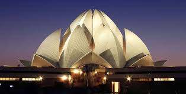
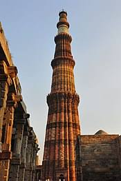
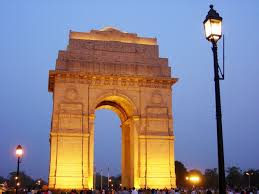

 The Lotus Temple, located in Delhi, India, is a Bahá'í House of Worship that was dedicated in December 1986, having been completed for a total cost $10 million.It serves as the Mother Temple of the Indian subcontinent. Notable for its flowerlike shape, it has become a prominent attraction in the city. DELHI
 Qutub Minar is a minaret that forms part of the Qutb complex, a UNESCO World Heritage Site in the Mehrauli area of Delhi, India. Made of red sandstone and marble, Qutub Minar is a 73-metre (239 feet) tall tapering tower of five storeys, with a 14.3 metre (47 feet) base diameter, reducing to 2.7 metres (9 feet) at the peak.It contains a spiral staircase of 379 steps.Its design is thought to have been based on the Minaret of Jam, in western Afghanistan.
 The India Gate, (originally called the All India War Memorial), is a war memorial located astride the Rajpath, on the eastern edge of the ‘ceremonial axis’ of New Delhi, India, formerly called Kingsway.